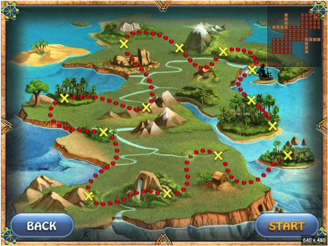

Toby's Portfolio
For personal information, navigate to the Contact Me tab on the navigation bar
Technical Projects
CS Checkers Game Project
A checkers game designed in C++ programming language. The game was designed using Northwestern's CS 211 game engine. This was originally a class project. Click on the image for more information.

Treasure Game Project
A game designed in DrRacket programming lanuage to dislay inherintance and object oriented programming. This was originally a class project. There is no front-end, only back-end avaialble.